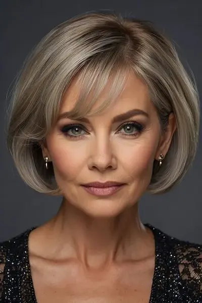
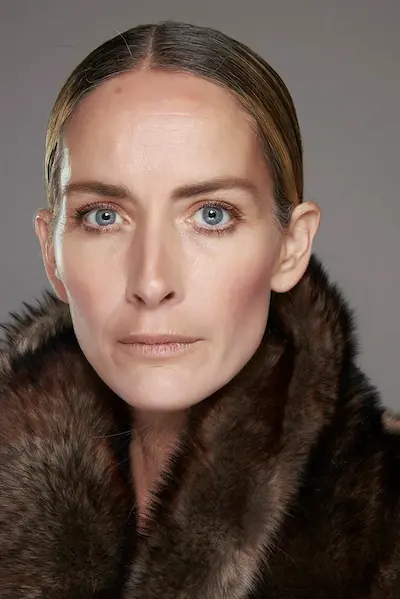

Гид по странице антивозрастного макияжа
Пошаговый антивозрастной макияж
Техника лифтинг-макияжа для свежего, подтянутого и естественного образа
Топ средств для зрелой кожи
Увлажняющие и разглаживающие текстуры без эффекта утяжеления
Премиум-средства для зрелой кожи
Профессиональные формулы для лифтинг-эффекта и сияния кожи
Бюджетный набор (до 500 MDL)
Базовый набор для свежего и естественного антивозрастного макияжа
Запишитесь к профессиональному визажисту
Запишитесь на антивозрастной макияж в Молдове и получите свежий, лифтинг и естественный образ без эффекта перегруженной кожи.
Что такое антивозрастной макияж
Антивозрастной макияж — это техника, направленная на создание свежего, лифтинг-эффекта и визуально более гладкой и подтянутой кожи , которая помогает смягчить возрастные изменения и подчеркнуть естественную красоту.
Такой макияж сочетает в себе лёгкие текстуры, деликатное сияние и кремовые продукты . Он не перегружает кожу, не подчёркивает морщины и создаёт эффект естественного омоложения.
Главная цель — визуально освежить лицо, выровнять тон и подчеркнуть черты, сохраняя естественность и мягкость без эффекта маски.
Антивозрастной макияж идеально подходит для повседневной носки, деловых встреч, мероприятий и фотосъёмок , где важно выглядеть ухоженно, свежо и элегантно.
Подготовка кожи с возрастными изменениями перед макияжем
Кожа с возрастными изменениями требует деликатной подготовки, чтобы макияж выглядел свежим, гладким и лифтинг-эффектом. Без правильного ухода тональные средства могут подчёркивать морщины и неровности текстуры.
Основная задача — увлажнить кожу, повысить её эластичность и создать максимально гладкую основу для естественного и омолаживающего макияжа.
- Мягкое очищение — деликатные средства без агрессивного воздействия, сохраняющие комфорт кожи
- Увлажняющий тонер — восстанавливает баланс и подготавливает кожу к дальнейшему уходу
- Антивозрастная сыворотка — с гиалуроновой кислотой или пептидами для упругости кожи
- Питательный крем — смягчает текстуру и визуально разглаживает кожу
- Лифтинг-праймер — выравнивает рельеф и помогает макияжу лечь более ровно
Дайте уходу полностью впитаться перед нанесением макияжа — это сделает кожу более гладкой, сияющей и визуально более молодой.

Пошаговый антивозрастной макияж


Антивозрастной макияж строится на лёгких текстурах, сиянии и мягкой коррекции, чтобы освежить лицо и создать эффект лифтинга.
Лифтинг-база
Используйте праймер с разглаживающим эффектом, чтобы визуально смягчить морщины и подготовить кожу.
Тон
Выбирайте лёгкие увлажняющие тональные средства с естественным финишем, которые не подчеркивают текстуру кожи.
Консилер
Наносите тонким слоем, только в нужных зонах, избегая перегрузки области под глазами.
Кремовые текстуры
Используйте кремовые румяна и хайлайтер для эффекта свежести и объёма.
Фиксация
Минимальное использование пудры — только там, где это действительно необходимо.
Финальное сияние
Добавьте увлажняющий фиксатор или сияющий спрей для эффекта живой и молодой кожи.
Идеальный антивозрастной макияж — это лёгкость, свежесть и естественный лифтинг без эффекта маски.
Почему антивозрастной макияж может подчёркивать морщины (и как это исправить)
- недостаточное увлажнение кожи перед макияжем
- использование плотных или матирующих текстур
- отсутствие праймера с разглаживающим эффектом
- слишком большое количество пудры
- неправильная техника нанесения консилера
Основная причина — перегрузка кожи и неправильный выбор текстур. Зрелая кожа требует лёгкости и сияния.
Чтобы макияж выглядел моложе и держался дольше:
- хорошо увлажняйте кожу перед макияжем
- используйте лёгкие и кремовые текстуры
- избегайте плотной пудры
- фиксируйте макияж только в отдельных зонах
- используйте увлажняющие фиксирующие спреи
Такой подход помогает добиться свежего, лифтинг-эффекта и естественного омоложения без эффекта перегруженного макияжа.

Топ средств для макияжа возрастной кожи
Возрастная кожа нуждается в увлажняющих формулах, мягком сиянии и деликатных текстурах, которые визуально разглаживают кожу, не подчеркивают морщинки и помогают сохранить свежий естественный вид.
Независимый обзор. Продукты не спонсируются.
*Данный материал является независимым редакционным обзором и
не спонсируется производителем или продавцом продукта.
*Все названия брендов, товарные знаки и наименования продукции
принадлежат их законным правообладателям и используются
исключительно в информационных и редакционных целях.
*Представленная информация отражает мнение автора и не
является официальной рекомендацией производителя.
*Ссылки приведены в ознакомительных целях. При наличии
партнёрства здесь может быть размещена прямая ссылка на
продукт.

Премиум-средства для макияжа возрастной кожи
Премиальные средства для возрастной кожи помогают визуально разгладить текстуру, вернуть коже сияние и создать эффект свежего, ухоженного лица без тяжёлого макияжа.
Независимый обзор. Продукты не спонсируются.
*Данный материал является независимым редакционным обзором и
не спонсируется производителем или продавцом продукта.
*Все названия брендов, товарные знаки и наименования продукции
принадлежат их законным правообладателям и используются
исключительно в информационных и редакционных целях.
*Представленная информация отражает мнение автора и не
является официальной рекомендацией производителя.
*Ссылки приведены в ознакомительных целях. При наличии
партнёрства здесь может быть размещена прямая ссылка на
продукт.
Бюджетный набор для макияжа возрастной кожи (до 500 MDL)
💡 Общая стоимость набора: ~420–500 MDL
Независимый обзор. Продукты не спонсируются.
*Данный материал является независимым редакционным обзором и
не спонсируется производителем или продавцом продукта.
*Все названия брендов, товарные знаки и наименования продукции
принадлежат их законным правообладателям и используются
исключительно в информационных и редакционных целях.
*Представленная информация отражает мнение автора и не
является официальной рекомендацией производителя.
*Ссылки приведены в ознакомительных целях. При наличии
партнёрства здесь может быть размещена прямая ссылка на
продукт.
✔ Более свежий вид кожи ✔ Лёгкий лифтинг-эффект ✔ Естественный макияж без перегруженности
Этот бюджетный набор помогает создать мягкий и свежий макияж для возрастной кожи: лёгкие сияющие текстуры визуально смягчают черты лица, делают кожу более ухоженной и помогают избежать эффекта тяжёлого макияжа.
Макияж для возрастной кожи подчёркивает морщины и выглядит тяжёлым?
Возрастная кожа часто теряет упругость и естественное сияние, а плотный макияж может подчёркивать морщины, сухость и текстуру кожи.
Это происходит не из-за возраста, а из-за неподходящих текстур и недостаточного увлажнения, которые делают макияж менее естественным.
Запишитесь к профессиональному визажисту и получите макияж для возрастной кожи с эффектом свежей, гладкой и визуально более молодой кожи, который выглядит естественно и сохраняет комфорт в течение всего дня.
Записывайтесь на макияж.

Частые вопросы о макияже для возрастной кожи
Почему макияж подчёркивает морщины?
Основная причина — плотные матовые текстуры и недостаток увлажнения. Они делают линии и складки кожи более заметными.
Как подготовить возрастную кожу перед макияжем?
Используйте мягкое очищение, увлажняющую сыворотку, питательный крем и сияющий праймер для более гладкого и свежего результата.
Какие тональные средства подходят возрастной коже?
Лучше всего подходят увлажняющие тональные основы с лёгким или средним покрытием и естественным сияющим финишем.
Нужно ли использовать пудру для возрастной кожи?
Да, но в минимальном количестве. Лучше фиксировать только отдельные зоны, чтобы сохранить естественное сияние кожи.
Как сделать макияж более омолаживающим?
Используйте кремовые текстуры, мягкое сияние, натуральные оттенки и избегайте слишком плотного покрытия.
Можно ли скрыть возрастные изменения с помощью макияжа?
Полностью скрыть возрастные изменения невозможно, но правильно подобранный макияж помогает визуально освежить лицо и сделать кожу более гладкой и сияющей.